Identidade Visual & Lookbook · Est. 2026 · Cais da Afurada
Brand Kit Oficial
Brand Kit Oficial
Alpha Douro
Todos os elementos da marca reunidos num único link para consultar no telemóvel ou computador: logótipos vetoriais (SVG), paleta de cores com código clicável, mockups de merchandising, mantas de lã portuguesa, copos térmicos, cartões de embarque, kit VIP para hotéis 5★ e as 3 propostas do barco real ACHA 6,95m.
01 · Sistema de Logótipo Vetorial
Logótipo Principal, Selo Circular & Monograma


02 · Cores & Tipografia da Casa
Paleta Amalfi Capri × Porto
Clique em qualquer cartão de cor para copiar o código HEX diretamente para a gráfica, bordadeira ou pintor náutico.
Display & Logótipo
Cormorant Garamond
Usada no logótipo oficial, títulos editoriais e cabeçalhos dos cartões de embarque.
Texto & Interface
Onest Clean Sans
Leitura cristalina em telemóvel, descrições dos passeios, preços e botões de reserva.
Telemetria & Coordenadas
41°08'36"N · 08°38'52"W
JetBrains Mono para coordenadas do Cais da Afurada, códigos de Boarding Pass e horários solares.
03 · Lookbook Completo de Merchandising & Hospitalidade
Mantas, T-Shirts, Bonés, Copos & Material a Bordo
Clique em qualquer fotografia para ampliar em ecrã inteiro.
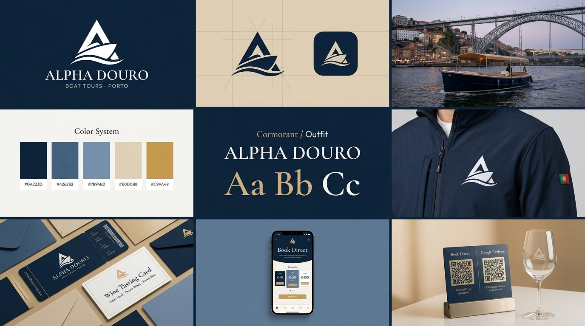
Identidade MasterPrancha Brand Guidelines 3×3
Resumo executivo completo da marca numa única prancha de apresentação.
 Merchandising
Merchandising
Boné 3D & T-Shirt (Selo no Peito)
Versão corrigida e refinada: selo circular oficial bordado ao nível do coração.
 Têxteis Portugueses
Têxteis Portugueses
Tote em Linho & Manta de Lã
Mantas de conforto para uso a bordo e venda exclusiva a clientes (€65).
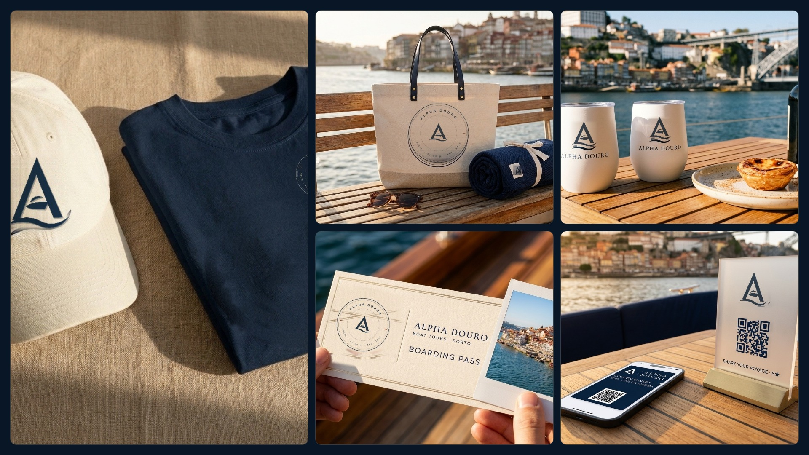
Coleção CompletaKit Hospitalidade & Tripulação
Coerência total entre fardamento, acessórios de cais e lembranças premium.
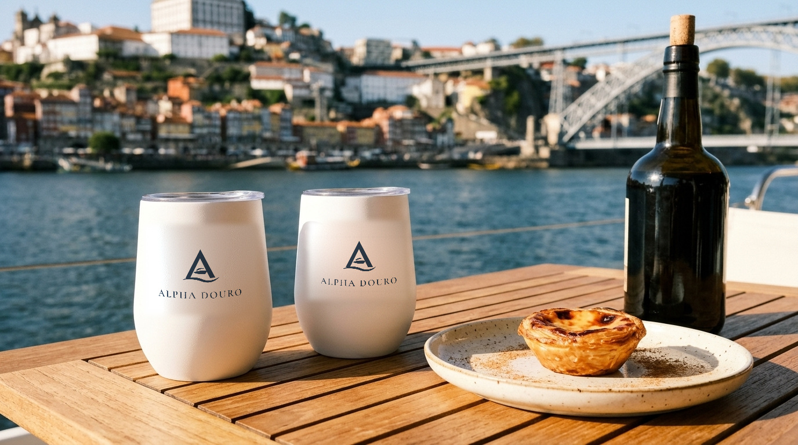
Mesa a BordoCopos Térmicos Mate & Pastel de Nata
Serviço inquebrável de luxo a bordo (também vendável como recordação).
 Ritual Gastronómico
Ritual Gastronómico
Prova Cega 1·2·3 & Garrafa a Lacre
Produto de altíssima margem e fortíssimo impacto fotográfico no Instagram.
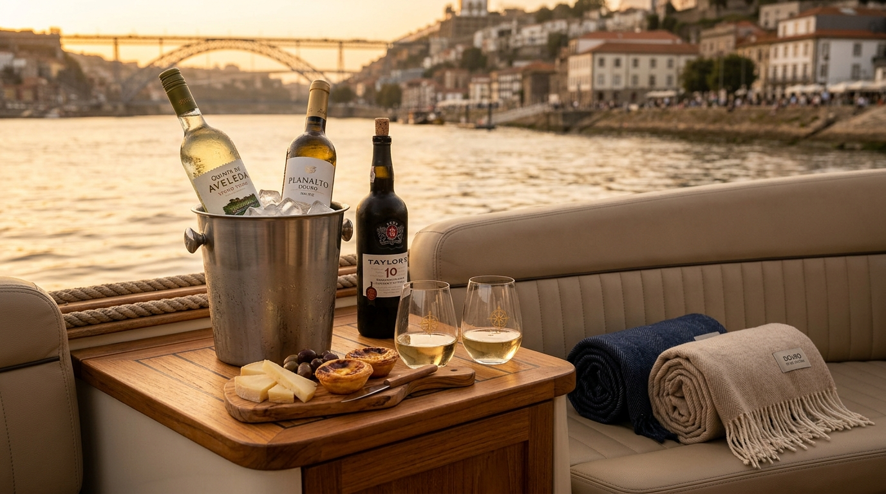
Charter PrivadoMesa Reserva Charter Privado
Apresentação da mesa de teca para reservas privadas de €490 a €590.
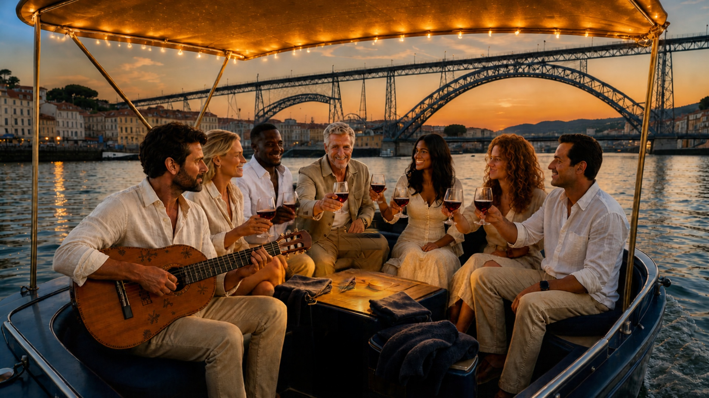
Experiência AssinaturaSunset Acústico & Luzes 2200K
Versão corrigida: mesa limpa, iluminação no teto do toldo e ambiente intimista.
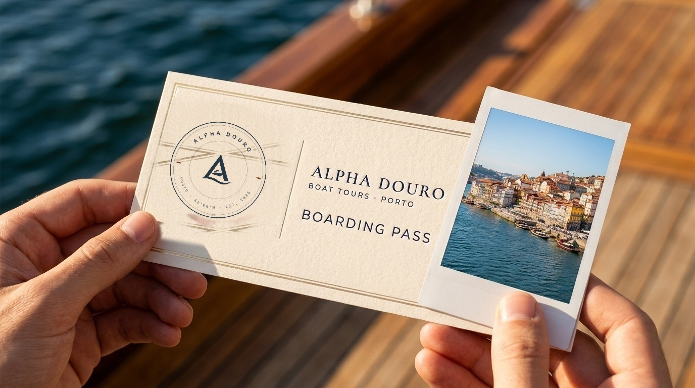
PapelariaBoarding Pass & Polaroid da Ribeira
Lembrança física de baixo custo que gera partilhas orgânicas e avaliações 5★.
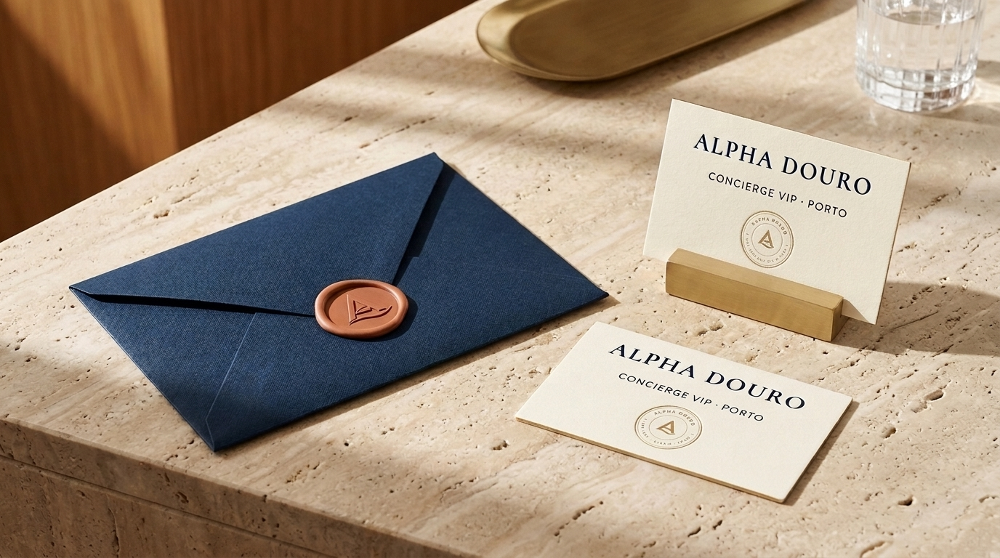
Parcerias B2BKit VIP Concierge Hotéis 5★
Convites de luxo para fechar parcerias com receções de hotéis boutique sem gastar em anúncios.
 Cais da Afurada
Cais da Afurada
Cavalete & Sinalética de Cais
Presença física imediata no Cais da Afurada para captar turistas a passear na marina.
 Digital & SEO Local
Digital & SEO Local
Apple Wallet & Placa QR Google 5★
Ferramenta nº 1 para subir rapidamente ao Top 3 do Google Maps no Porto a custo €0.
04 · Decisão do Gil · Barco Real ACHA 6,95m
Escolha da Foto Hero & Conceitos de Pintura
O website atual mantém o Hero editorial elegante até o Gil escolher qual destas 3 versões reais da ACHA 6,95m prefere usar na capa.
 Hero Atual (Ativo)
Hero Atual (Ativo)
Hero Atual (Conceito Editorial)
Mantido provisoriamente nos 2 websites até à escolha final do Gil.
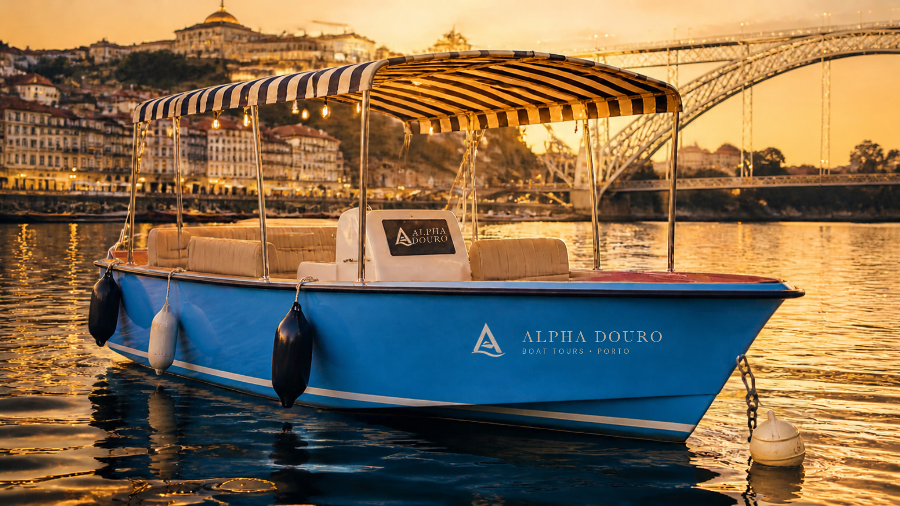
Proposta Barco Real 01Proposta 01 · Verão & Ponte D. Luís I
ACHA 6,95m real em luz dourada de final de tarde sob o toldo solar.
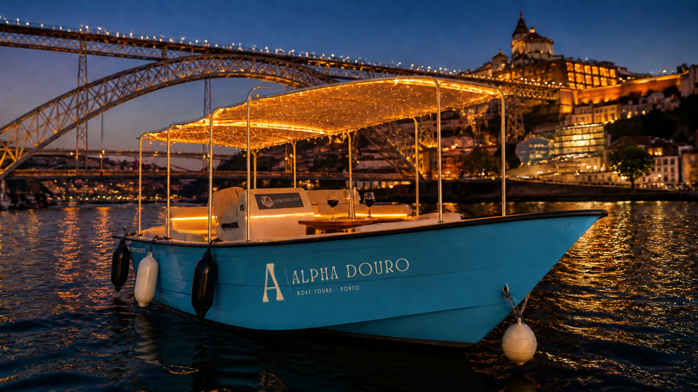
Proposta Barco Real 02Proposta 02 · Hora Azul & Luzes 2200K
Destaca imediatamente a iluminação quente no toldo ao pôr do sol.
 Proposta Barco Real 03
Proposta Barco Real 03
Proposta 03 · 4 Estações (Capota 360°)
Mostra o barco real no Cais da Afurada pronto para faturar 365 dias/ano.
Estudo de Transformação Visual da Embarcação (Antes vs. 3 Conceitos)
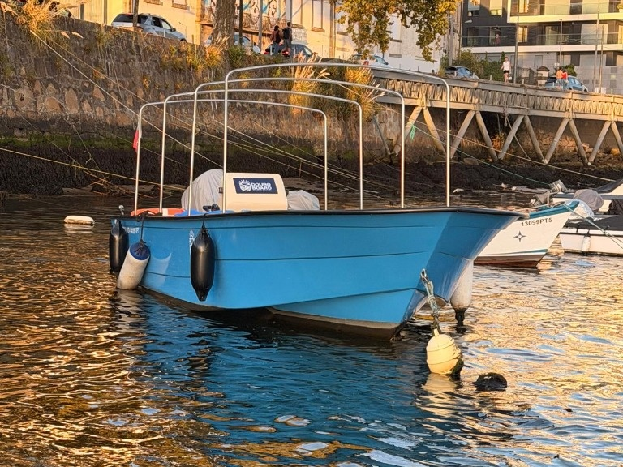
Antes (Atual)Estado Atual
Base real ACHA 6,95m com casco azul.
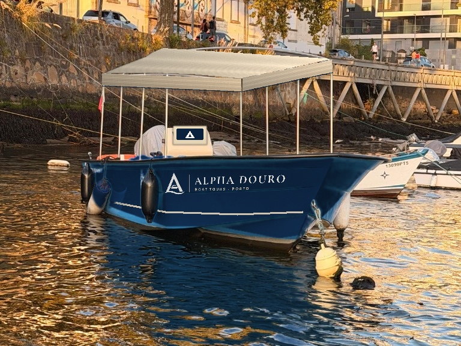
Conceito 01Porto Riviera
Azul-marinho profundo & toldo areia.
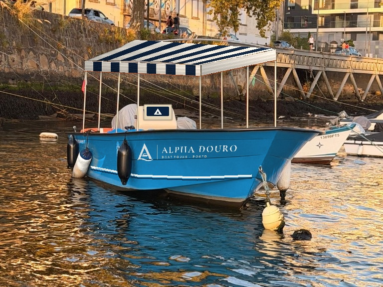
Conceito 02 · RecomendadoAmalfi Capri
Aproveita o azul atual do casco + estofos creme.
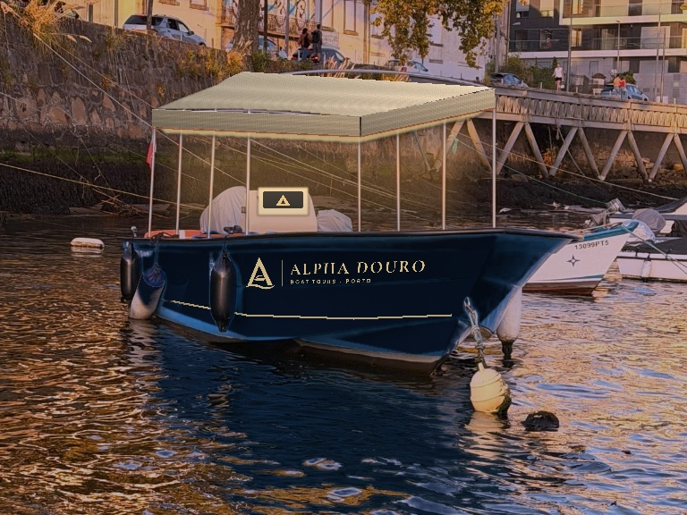
Conceito 03Douro Noir
Casco escuro & apontamentos terracota.
05 · Os 5 Exemplos Ultra-Realistas · Teu Barco Real + Capota Azul-Marinho Lisa (#0A223D)
5 Cenários com o Teu Barco Real & Logo Oficial
Todos gerados a partir das tuas fotos originais de hoje (mesmo casco azul-cobalto, solário areia, consola e arcos inox), já com a capota Azul-Marinho lisa sem riscas e o logótipo oficial EST. 2026.
Ver Website Completo Só com Estas 5 Fotos Reais ↗ Exemplo 01 · Hero Golden Hour
Exemplo 01 · Hero Golden Hour
01 · Golden Hour · Ribeira & Ponte D. Luís I
Capota Azul-Marinho lisa sem riscas + luzes 2200K + logo oficial no casco e na consola.
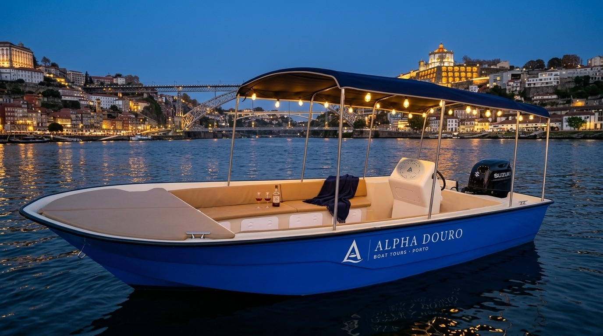
Exemplo 02 · Hero Hora Azul02 · Hora Azul · Luzes 2200K & Serra do Pilar
A prova visual de como o teto Azul-Marinho faz as luzes quentes brilhar 4× mais.
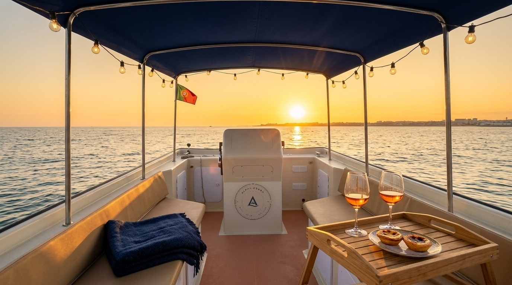
Exemplo 03 · Tour Sunset €6003 · Pôr do Sol no Mar · Brinde a Bordo
Ideal para o Tour Sunset (€60/p ou Privado) — mostra exatamente a experiência a bordo.
 Exemplo 04 · 365 Dias / Inverno
Exemplo 04 · 365 Dias / Inverno
04 · Inverno 360° · Cais da Afurada
Mostra aos clientes que navegam com conforto todo o ano (e serve de guia para o capoteiro).
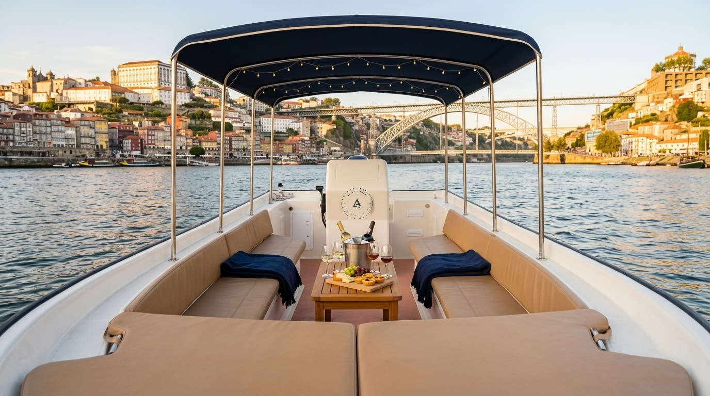
Exemplo 05 · Prova de Vinhos & Privado05 · Solário Duplo & Prova de Vinhos
Destaca o solário de proa real e a mesa de prova de vinhos frente à Ribeira e D. Luís I.
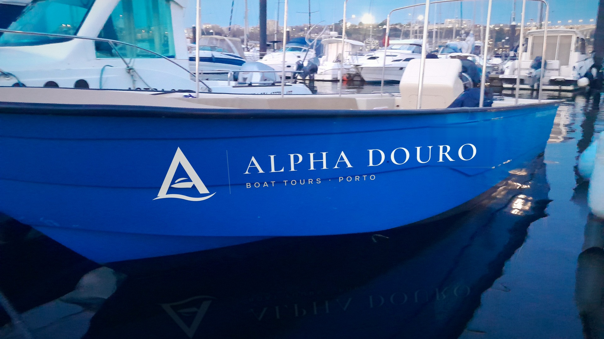
Bónus · Molde Gráfica (Vinil)Molde Direto para a Gráfica (Vinil Casco)
Foto real da marina pronta para enviar à gráfica recortar o vinil branco mate do casco.
06 · Imagens Oficiais para Grupo WhatsApp & Perfil (1080×1080)
6 Avatares WhatsApp Prontos a Descarregar
Desenhados com margem circular segura para o recorte redondo do WhatsApp (e Instagram). Clique em «Descarregar PNG ↓» no teu favorito.
 Opção 01 · Clássico
Opção 01 · Clássico
01 · Selo Navy sobre Linho
 Opção 02 · Luxo Noturno
Opção 02 · Luxo Noturno
02 · Selo Ouro sobre Azul Douro
 Opção 03 · Recomendado
Opção 03 · Recomendado
03 · Monograma Marfim · Azul Douro
 Opção 04 · Solar Capri
Opção 04 · Solar Capri
04 · Monograma Branco · Azul Capri
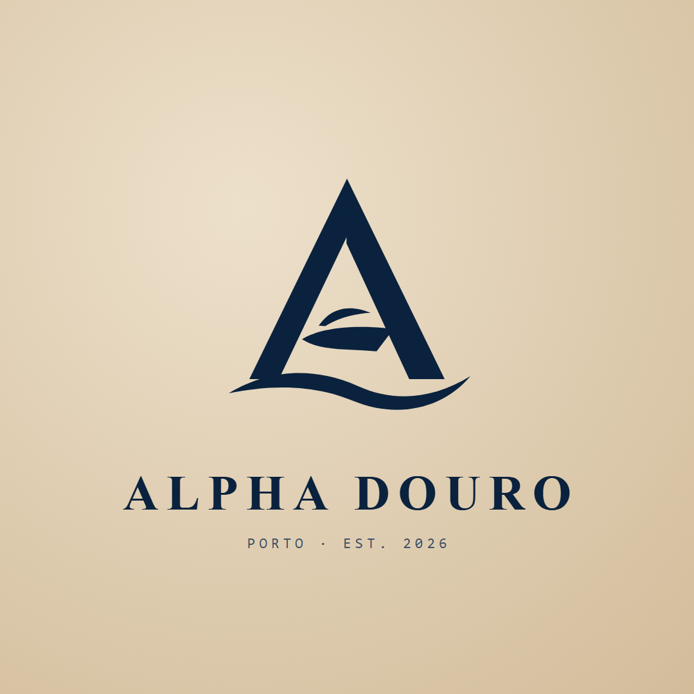
Opção 05 · Minimal Areia05 · Monograma Navy · Areia

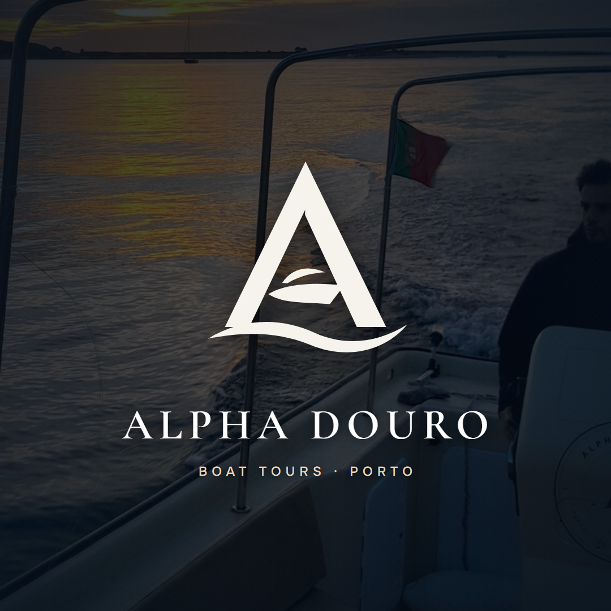
Opção 06 · Foto Real